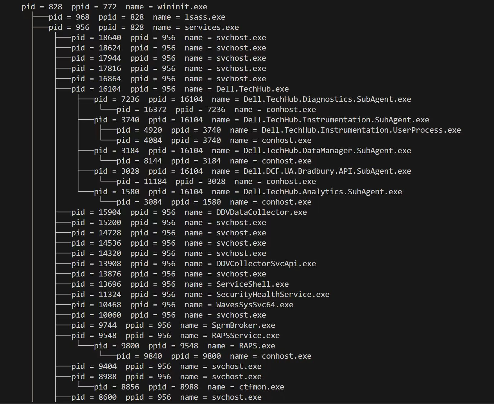

Redalpaca's Blog
Hi👋, welcome to alpaca land.
Hi👋, welcome to alpaca land.

With python, we do not have to care about the featrues of each OS and how they organize their process infomation. I care about how to create a tree and how to print the tree like command 'pstree'.
I chose a data structure like this:
Node (level n)
├──── Child ———— Child's brother (level n+1)
└──── Brother ———— ... (level n)
The data structure has two pointer(or reference): brother( Peer node ) / child( Child node ), and save a lot of spare space compare with create an array of process infomation.
Of cource I can create a List to save children, but Brother plays an important role in the program.
The class is like:
class ProcessTreeNode(object):
def __init__(self, pid, **kwargs) :
self.pid = pid
self.child = None
self.brother = None
self.visited = False
# Dynamically create instance member variable
names = self.__dict__
for key, value in kwargs.items():
names[key] = value
def addChild(self, child):
if child.pid == self.pid:
return
if not self.child:
self.child = child
else:
child.brother = self.child
self.child = child
return
def show(self):
for key, value in self.__dict__.items():
print(key, value)
def getInfo(self):
return 'pid = '+ str(self.pid) + ' ppid = ' + str(self.ppid) + ' name = ' + self.name
Assume we have created a porc tree like that, how do we print it out?
depth, indicating recursion depth.The key is adding a parameter: prefix, and we are required to notice:
Here we have 4 signs:
├────└────│ If current node has brother:
├──── as current prefix.└──── as current prefix.For its chidren, we add new infomation to prefix as param
If current node has brother:
│ as next prefix as next prefixThe function is like:
def showProcTree(self, root: ProcessTreeNode, depth, prefix):
if not root:
return
prefix_branch = '├────' if root.brother else '└────'
prefix_next = prefix + ('│ ' if root.brother else ' ')
if not depth:
prefix_branch = ' '
print(prefix + prefix_branch + root.getInfo())
self.showProcTree(root.child, depth+1, prefix= prefix_next)
if root.child:
child = root.child
while child.brother:
self.showProcTree(child.brother, depth+1, prefix= prefix_next)
child = child.brother
return
The whole Printer class is like:
class ProcessPrinter:
def __init__(self):
self.procHash = self.getProcHash()
self.createProcTree(self.procHash)
def getProcHash(self):
pids = psutil.pids()
pidHash = {}
import tqdm
pbar = tqdm.tqdm(pids)
pbar.set_description('Loading procinfo')
for pid in pbar:
try:
proc = psutil.Process(pid)
pidHash[pid] = ProcessTreeNode(pid, ppid = proc.ppid(), name = proc.name())
except:
pass
return pidHash
def createProcTree(self, pidHash: dict):
for pid, proc in pidHash.items():
if proc.ppid not in pidHash:
continue
parent = pidHash[proc.ppid]
parent: ProcessTreeNode
parent.addChild(proc)
def showProcTree(self, root: ProcessTreeNode, depth, prefix):
if not root:
return
prefix_branch = '├────' if root.brother else '└────'
prefix_next = prefix + ('│ ' if root.brother else ' ')
if not depth:
prefix_branch = ' '
print(prefix + prefix_branch + root.getInfo())
self.showProcTree(root.child, depth+1, prefix= prefix_next)
if root.child:
child = root.child
while child.brother:
self.showProcTree(child.brother, depth+1, prefix= prefix_next)
child = child.brother
return
def pstree(self, pid):
self.showProcTree(self.procHash[pid], 0, '')